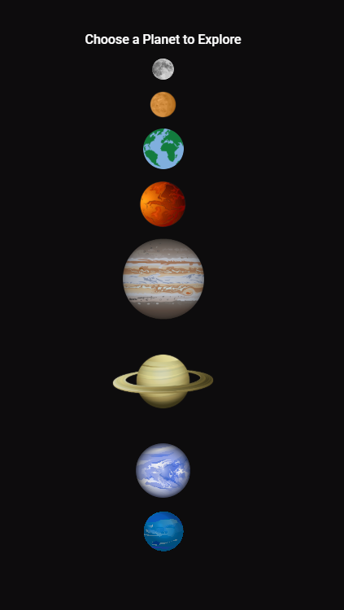

My Run
Background
I got the idea for the app after wanting a simple way to track my runs. I currently use a notebook but wanted to design something that was both more practical and more fun to use. I didn't want it to track all the extra stuff, I wanted the focus to be on mileage and pace. Originally I wasn't designing this with a target audience in mind, I was only thinking what would I like. Throughout the process I leaned more towards a modern, simple approach. I wanted the app to feel more feminine with the pink and purple tones, but also be appealing to all genders.
Tools and Skills
Key Features
Profile Setup
Users can create their profiles and set goals for their experience
Calendar
A built in calendar where you can add runs, plan ahead, and view past workouts
Statistics Page
View weekly, daily and monthly statistics though simple dashboards
Design Choices
Because this was a personal project I got to make all the design choices. I knew I wanted to design a mobile app and not touch a desktop version, because of this I wanted it to have only the necessary information, work well on all mobile screen sizes, and be accessible. For the colors I wanted it to lean a bit more feminine but also wanted the colors to be energizing and modern. I went with a blue to purple ombre because it felt modern, gave the interface some variety, and let the app feel more fun. Because the app is a workout app I wanted it to feel energizing and inspiring to use, and my use of color was one way I did that.

Process
Create a inspo board with some images for aesthetic, color, and mood of the app
Add in the images, graphics, and components for a polished design
Sketch out several initial wireframes to get app layout options
Test the prototype and ensure all buttons work and the main functions are featured
Create a high fidelity prototype with all the colors, fonts, and text
Make any finishing touches

Challenges + Solutions
When I was working on this design I had a bit of a struggle getting all the information I wanted to fit nicely on a mobile screen. I didn't want the interface to feel cluttered and needed to decide what was absolutely necessary to display. I went through several iterations for the calendar pages as well. I needed it to be easy to read at a glance and have the best format for showing different lenghts of runs for the daily page. I went with a scrolling box because I wanted any hour of the day to be available. Because people run at such varying times and elngths, this lets any length at any time of day be easily seen.


Learned Along the Way
For this project I think I learned the most about mobile design in general. I really wanted the app to look professional, reflect modern design choices, and appear to be a fully fleshed out app design wise. For this design I did research on current fitness apps to get a feel for their layouts, what data they displayed on their home screens, and what aesthetics seemed popular. It was helpful learning how to create a design that took elements from other apps while also being original and creating something that stood-out and had its own branding.


Explore the Prototype
Click below to view the design, mood board, and prototype.